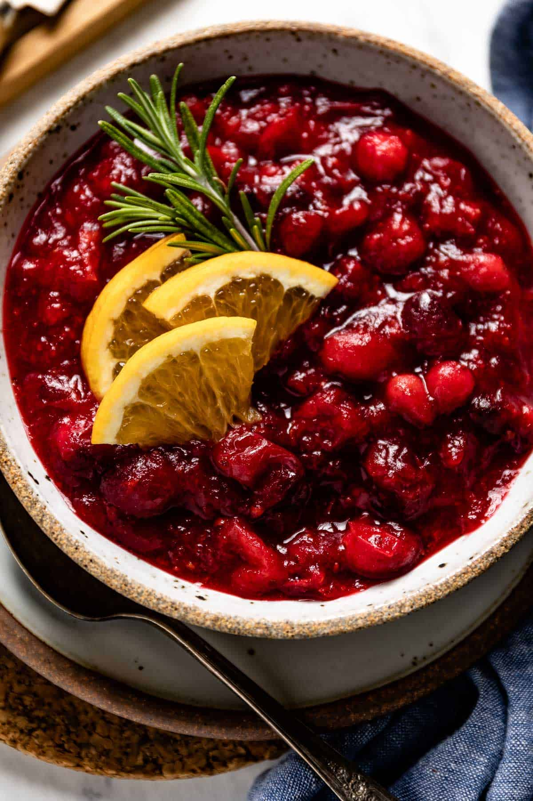

Cranberry-Maple sauce

Description
Cranberry sauce with touches of maple syrup
Ingredients
- 2 cups fresh cranberries
- 1 cup maple syrup
- 1 cup water
- ¼ teaspoon ground dried spicebush berries or allspice (optional)
Steps
- In a saucepan combine cranberries, syrup and water
- Bring to boil over medium-high heat
- Reduce heat to medium-low and cook, stirring often, for about 15 minutes, until berries have burst and sauce has thickened
- Stir in spicebush berry if desired
- Cool and serve at room temperature
- Sauce is best made several hours in advance so that flavors will blend